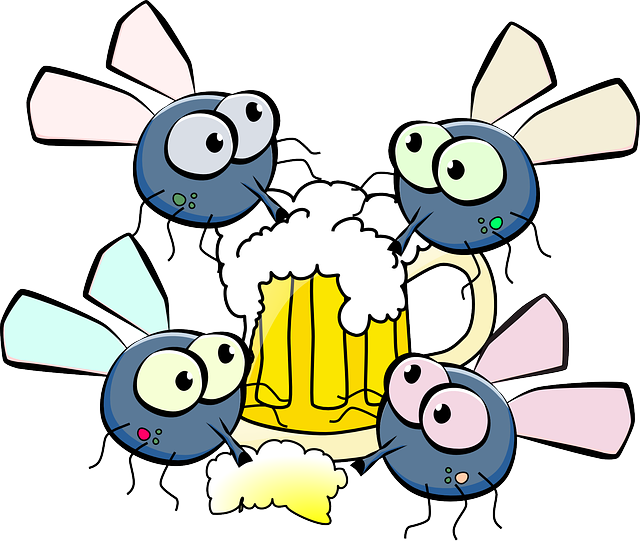
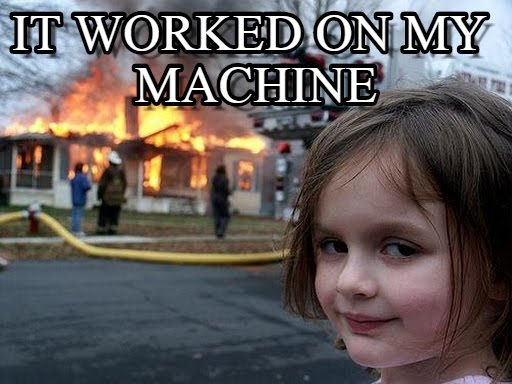

system validation in the age of continuous delivery
APIL 2017
Ken Egozi
building
Social networks
E-Commerce
Collaboration tools
Games
problem
lose money
lose information
lost trust
OMG OMG OMG
GET OFF MY LAWN

Why do systems fail?
Why bugs?
solution
Do not write bugs!
Do not write bugs!
unit testing
integration testing
formal validation
however
knock knock race condition! who's there?
OS update
self-replicating bug
SSL expiration
“Windows Azure Storage experienced a worldwide outage impacting HTTPS traffic due to an expired SSL certificate,” Martin reported. “HTTP traffic was unaffected but the event impacted a number of Windows Azure services that are dependent on Storage.”


Hush
if (u.pwd == pwd) {
return "Collect 200!"
}
return "Go to jail"
if (u.hpwd == hash(pwd)) {
return "Collect 200!"
}
return "Go to jail"

if (u.hpwd == hash(pwd + u.salt)) {
return "Collect 200!"
}
return "Go to jail"
are you an existing user?
STOP!
if (u.hpwd == hash(pwd + u.salt)) {
return "Collect 200!"
}
if (u.salt == new byte[16] && u.hpwd == hash(pwd)) {
u.salt = genRandomBytes(16)
u.hpwd = hash(pwd + u.salt)
u.save()
return "Collect 200!"
}
return "Go to jail"
UPDATE TABLE users ADD COLUMN salt NOT NULL DEFAULT '\0\0\0\0\0\0\0\0\0\0\0\0\0\0\0\'
and in QA and Staging!
are you an existing user?
STOP!
what now?
Timeline
10:12 Migration script ran on prod DB
10:20 code deployed to prod
16:05 First impacted customer
18:05 First impacted customer sends email
18:10 Problem escalated to engineering team
18:15 Decision made not to roll back
19:20 Engineer repro on prod, problem identified
19:30 Fixed migration script is code-reviews
19:35 Fixed migration script ran on prod DB
how are we doing on time?
10:20 code deployed to prod
16:05 First impacted customer
18:05 First impacted customer sends email
19:30 Fixed migration script is code-reviews
19:35 Fixed migration script ran on prod DB
Time to Failure: 5h45m
Time to Detection: 2h
Time to Mitigation: 1h25m
Time to Recovery: 5m
root cause
prod default salts are byte[15] instead of byte[16]
DEFAULT '\0\0\0\0\0\0\0\0\0\0\0\0\0\0\0\'
15 '\0' and 1 '\'
MySQL decide not to fail, and guess differently on Windows and Linux
learnings from NullBug
Time to detection
always allow rollback
prod is always different
What did you say?
Large distributed system, uses Gossip for cluster discovery
6 years in production, millions TPS
yup, per second
Suddenly error rate goes up
Soon after, instances in the cluster randomly segfault and restart
Error rate goes further up
OMG OMG OMG
though shall gossip
host1.mycompany.com host6.mycompany.com host7.mycompany.com host10.mycompany.com host2.mycompany.com
?ost1.mycompany.com host6.mycompany.com host7.mycompany.com host10.mycompany.com host2.mycompany.com
When an instance is needed, a DNS validation is made to make sure it is valid, deleted if not
Deletion code is calling delete twice on the same string (C++ FTW). Segfault followes.
show me the check(sum)
checksum=0123456789abcdef
if headers.containsKey("checksum") ...
else whatever
?hecksum=0123456789abcdef
Zero downtime interim code was never removed
impact
Single NIC failure on a single host - caused worldwide impact on multiple subsystems
how are we doing on time?
Time to Failure: 6 years
Time to Detection: 1m
Time to Mitigation: 1h
Time to Recovery: 4h
learnings from NullBug
Time to detection
Self replicating bugs
Never tested scenarios
now what?
metrics
figure out the most important business metrics
figure out thresholds
Alarm on the thresholds
Auto-rollback on alarms
Look at trends, DoD, WoW, YoY
early
Consistency Check - replay traffic comparing results of Beta and Prod
Delta comparison - replay traffic comparing key metrics (latencies, CPU utilization, GC profile etc) on Beta vs Prod
Blast radius reduction
Regionalize (subsystems, locations, markets)
Deployment Windows - identify low-traffic o'clock
Canary deployments - deploy to one (or few) instances, compare metrics for a while
Controlled rollout - deploy to X% at the time, auto-rollback on alarms
easier during low-traffic windows
off the beaten track
We don't have many tests. I'm not advocating that you shouldn't put in tests. [The reason we can get away with this] is that we have a great community. So instead of having automated test we have automated human tests.
But I'm not stack overflow ...
Synthetic transactions - emulate users, products and interactions. Define success and failure metrics
Let's play
In the early 2000s, Amazon created GameDay, a program designed to increase resilience by purposely injecting major failures into critical systems semi-regularly to discover flaws and subtle dependencies. Basically, a GameDay exercise tests a company's
systems, software, and people in the course of preparing for a response to a disastrous event.
DiRT was developed to find vulnerabilities in critical systems and business processes by intentionally causing failures in them, and to fix them before such failures happen in an uncontrolled manner. DiRT tests both Google's technical robustness, by breakinglive systems, and our operational resilience by explicitly preventing criticalpersonnel, area experts, and leaders from participating.
Notomatic
Change management process - a "code" reviewed document
Pre-mortem
Clear rollback criteria
Pre-reviews scripts
Any monkey can execute or take over
Analysis
Correction Of Errors
Emphasis on learning, not on finger-pointing
five whys?
"how would you cut impact in half?"
"how would you cut detection in half?"
best learnings - read COEs
recap
- automate what you can, vet what you cannot
- reduce time to detection
- rollbackability is a feature
- reduce blast radius
- always be shipping!
Thank you!
@kenegozi